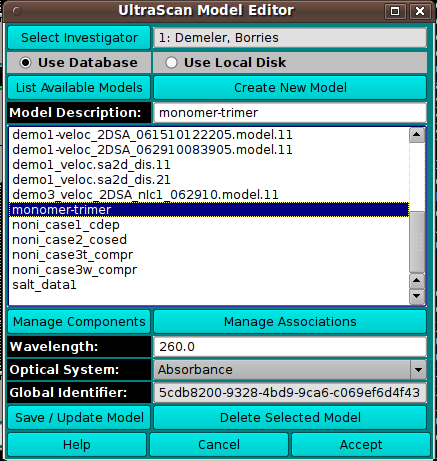

Model Editor:
Using this window, you choose a model to load and can create
or edit a model.

Dialog Items:
- Select Investigator This button brings up an
Investigator Dialog
that allows selecting the current investigator for whom to list models.
- Use Database Check to select loading or editing the model
from the database.
- Use Local Disk Check to select loading or editing the model
from the hard disk.
- List Available Models This button initiates population of
the list of models from the designated source (DB or disk).
- Create New Model This button designates that the model to be
specified and used by the caller is new. An entry with the name
"New Model" will be added to the list. It should be changed in the
Model Description text box to an appropriate name.
- Model Description: The text box here echoes the name of the
model currently selected in the list. The text box entry can be edited
to change the model name; of use, particularly, when a new model is
being created.
- Manage Components This button brings up a
Model Components Dialog in which the
model components and their properties can be specified.
- Manage Associations This button brings up a
Model Associations Dialog in which
reversible association chemical equations can be defined.
- Wavelength: Specify the model wavelength value in this
text box.
- Optical System: Select the model optical system:
Absorbance, Interference, or Flourescence.
- Global Identifier: Read-only global identifier of the
model.
- Save / Update Model Save the new or edited model to the
database or local disk.
- Delete Selected Model Delete the selected model from the
database or local disk.
- Help Show this documentation.
- Cancel Close the dialog and do not return the model selection
to the caller.
- Accept Close the dialog and return the model selection
to the caller.
 Manual
Manual